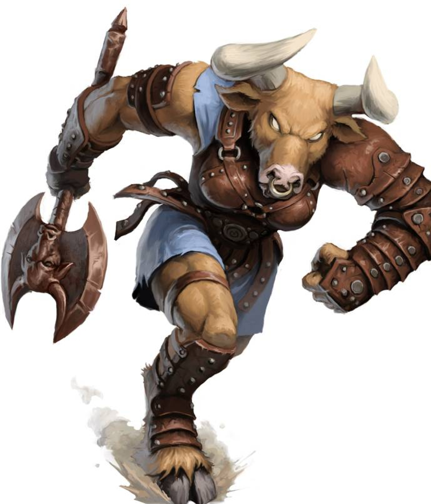

Playable Races > Minotaur
Beastkin descendant of divine creatures sent by the Storm God in ancient times to torment the Centaurs as punishment for some forgotten grave sin. Unlike the Centaurs, they prefer stable sedentary lives. They carve out maze-like homes within the canyons of central Karra, and have an uncanny ability to orient themselves effortlessly and sense creatures.
The minotaurs of Dunia are but shades of their ancestor race, as sentience and free will dampened the relentlessness that was once fueled by an existence-defining desire to bring divine justice. They are, however, still guided by an unrelenting instinct to pursue justice and right wrongs, or at least take control away from the lesser.
Sense Heading: Minotaur are immune to the spell maze, and can sense the general direction to any creature they know of.
Political Rage: Minotaur cannot be True Neutral.
Racials: +2 STR +1 AGI -2 INT. +4 Concentration.
Health: 1d9 health points per level.
Origin: Centaur live in labyrinthine cave-cities dug out in the walls of the Canyons of Woe, but a few of them are surprisingly known pirates.